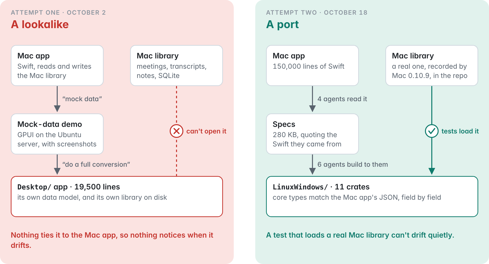
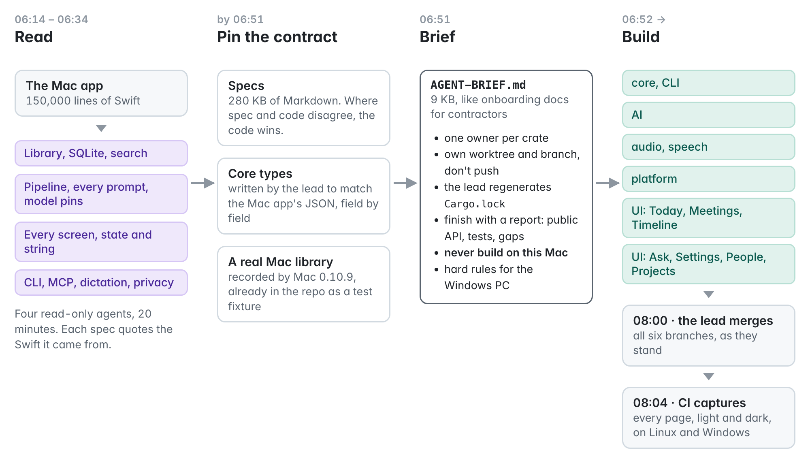
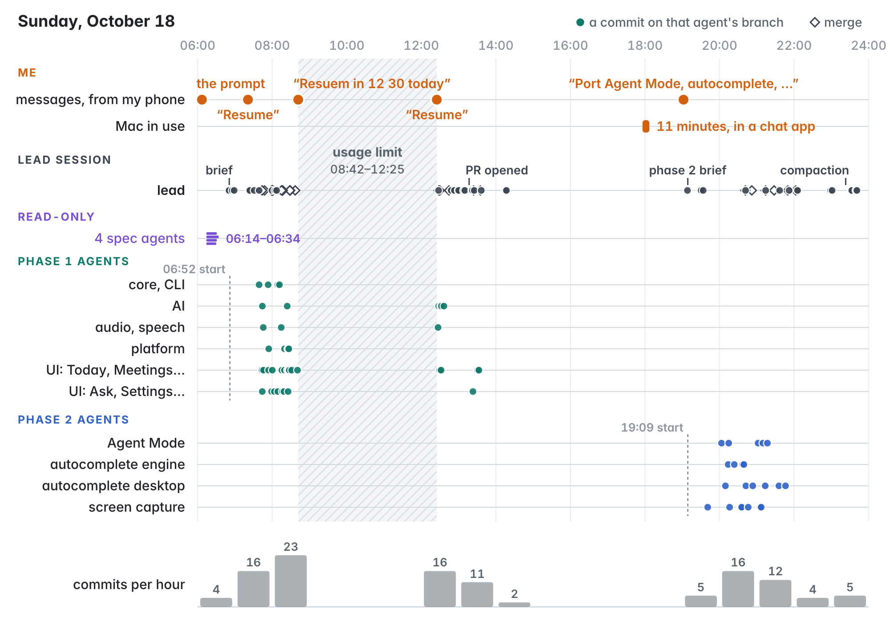
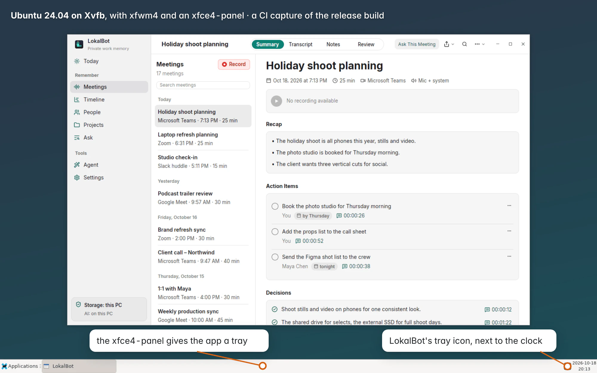
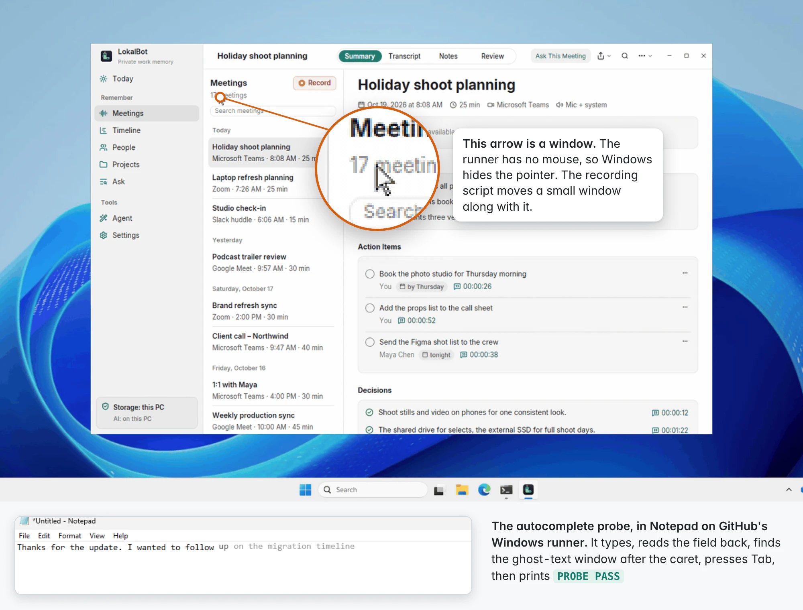
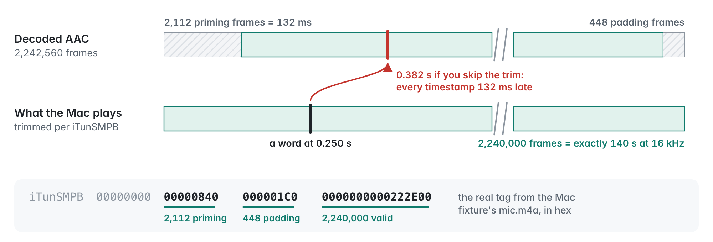
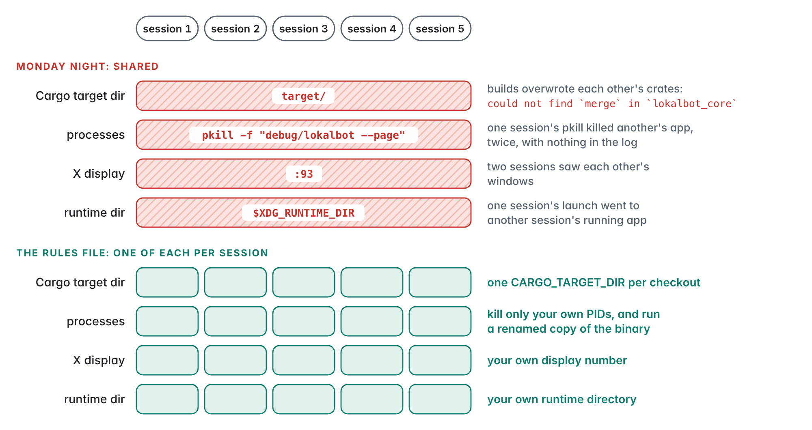
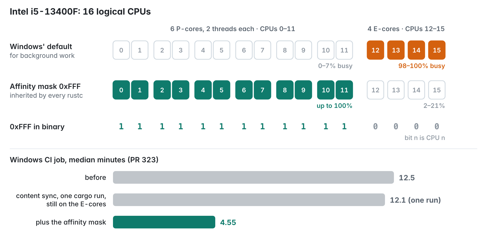
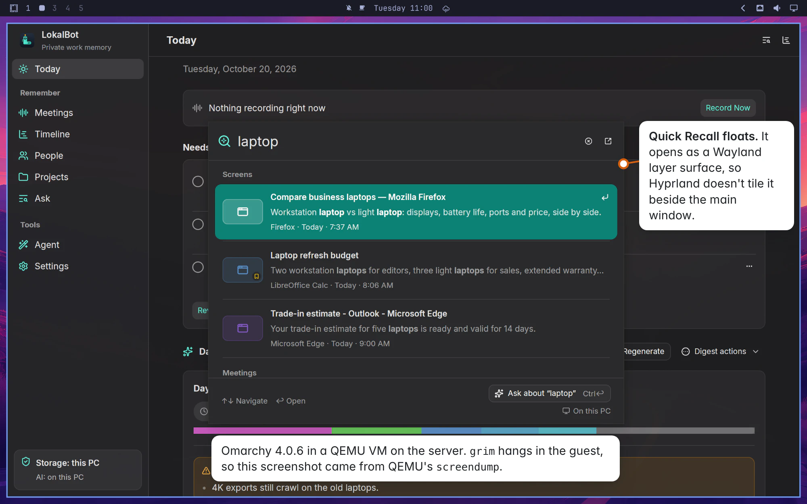

On Sunday, October 18, at about six in the morning, I sent a coding agent this message from my phone:
Build a fresh take at implementation of LokalBot for Linux and Windows users with Rust and GPUI, matching the current experience on macOS where it makes sense, but it doesn't have to be completely identical as platforms differ. Build it all in a single PR and add screenshots of both apps running. Use sub agents to speed up and parallelize the work if it helps.
The pull request merged on Monday afternoon: 365 files, 148,000 added lines, about 150 commits. On Tuesday at noon, LokalBot 0.11.0 shipped with a Windows installer, a portable zip, and .tar.gz, .deb, .rpm and Arch packages for Linux.
That Sunday I sent the port session five messages: the prompt, two that said "Resume", one that said "Resuem in 12 30 today" when I hit my usage limit, and one asking for four more features. The session ran on my Mac, and I talked to it through Claude Code's Remote Control from my phone. My Mac recorded eleven minutes of use that whole day, almost all of it in a chat app.
That makes for a good headline and a bad lesson. The bad lesson is "agents write code fast now". They do, and that's the least interesting thing that happened. What made the port work was everything around the code: a contract the agents could test against, a way for them to see a desktop they had no screen for, machines to build on, rules for agents sharing those machines, and a short list of decisions only I could make. This post is about those.

What was being ported
LokalBot is a private work memory for the Mac. It records meetings without a bot joining the call, transcribes them on device, writes notes with a local model, remembers what was on screen, completes text in other apps, and has an agent mode that can act on your files with approval. The Mac app is about 150,000 lines of Swift.
Almost every one of those features touches the operating system: capturing system audio, reading the focused text field through accessibility APIs, global shortcuts, a tray icon, notifications, launch at login, screen capture with exclusions. A port means re-answering each of those questions on two platforms, three if you count Wayland separately from X11, which you have to.
The Windows and Linux version is labelled alpha, and it is one.
Attempt one: the demo that became the architecture
This was not the first try. On October 2 I asked Codex, in three steps:
- "How could we make a version for Linux, Omarchy and Ubuntu and also make a Windows version too, what are my options… also is GPUI worth using"
- "Build me just a mock data GPUI/Rust version on this Ubuntu machine… and take screenshots"
- "It's pretty good, do a full conversion and open a PR"
By lunchtime there was a working app: 19,500 lines of Rust, a native GPUI interface, CI on Linux and Windows. I had a second agent review the backend, and it found real problems. The worst: the app promised to keep screen history for 14 days, but its cleanup only looked at the newest 1,000 moments, so the promise broke after a few hours of use. I pasted the review back, and the first agent fixed everything on the list.
Then the PR sat for 16 days and I closed it.
Nothing on the review list explains why. The app was a lookalike, not a port. It lived in its own folder with its own data model and its own library on disk. It couldn't open a library recorded on a Mac, and nothing in it would tell you when it drifted from the Mac app's behavior. The mistake was in my second message: "mock data". The demo became the architecture, and everything after it was polish on the wrong foundation.


Attempt two: write the contract first
The second attempt ran in Claude Code with a different prompt. The tool wasn't the difference: Codex later wrote the port's 24 interface languages and its parity audit. The difference was that this attempt spent its first hour not writing Rust.


It wrote specs from the source. Four read-only agents spent 20 minutes reading the Swift code and writing 280 KB of Markdown:
- the library format, SQLite schema and search;
- the processing pipeline, with every model prompt copied verbatim and every model pinned by URL and SHA-256;
- every screen's layout, states and exact UI strings;
- the CLI and MCP tool schemas, dictation, autocomplete and the privacy contract.
Each spec quoted the Swift it came from, and the brief told the implementers to trust the code when the two disagreed.
It pinned the data format. Before starting any implementers, the lead wrote the core model types to match the Mac app's JSON field by field. It pointed every agent at a real library fixture already in the repo: meetings, transcripts, chats, a journal and a SQLite database recorded by Mac version 0.10.9. A test that loads a real Mac library can't drift quietly.
It wrote a brief. The brief is 9 KB, and it reads like onboarding docs for a contractor team, because that's what it is. Each crate has exactly one owner:
| Crate | Owner |
|---|---|
lokalbot-core, lokalbot-cli |
core agent |
lokalbot-ai |
ai agent |
lokalbot-audio, lokalbot-speech |
speech agent |
lokalbot-platform |
platform agent |
lokalbot-engine |
lead |
lokalbot-app |
lead + two UI agents, split by page |
The rules are the ones you'd give people:
- edit only what you own;
- commit to your own branch in your own worktree, and don't push;
Cargo.lockwill conflict, and the lead regenerates it;- finish with a report: the public API others must call, how you tested it, and what's incomplete.
One rule came straight from my global instructions: never build on this Mac. Builds and tests ran on an OVH server with 16 threads, and Windows builds on my gaming PC over SSH. The laptop edited files and stayed cool.
The Windows PC section of the brief had its own hard rules, because that PC had coin-miner malware with SYSTEM rights until it was cleaned three days earlier:
- no scheduled tasks, services or startup entries;
- no changes to security settings;
- no secrets stored there;
- nothing installed beyond what a crate needs to build.

Sunday


| Time | What happened |
|---|---|
| 06:07 | My prompt |
| 06:14 | Four spec agents start reading the Swift app |
| 06:51 | The brief is written; the first commit lands a minute earlier |
| 06:52 | Implementation agents start in parallel worktrees: core, AI, speech, platform and two UI agents |
| 07:21 | "Resume" |
| 08:00 | The lead merges the six agents' branches as they stand. CI seeds demo data and captures every page, light and dark, on both platforms |
| 08:42 | Usage limit. I reply "Resuem in 12 30 today", typo included |
| 12:25 | "Resume" |
| 19:02 | My last message of the day: "Port Agent Mode, autocomplete, screen capture and the live transcript", the four features the first pass had left as Mac-only |
| 19:09 | A phase 2 brief and four more agents: agent mode, the autocomplete engine, autocomplete's desktop side, and screen capture. The lead takes the live transcript |
| 23:23 | The lead's context fills up; it compacts and carries on |
On Monday morning I asked for a short demo video in the PR. That afternoon it merged.
Verification is the actual work
An agent can write a tray icon. Knowing the tray icon appears is a different problem, and most of the engineering in this port went into giving the agents eyes and ears on machines with no screen.
Linux desktops. CI starts Xvfb with xfwm4 and an xfce4-panel, runs the release build, and screenshots every page with the tray next to the clock. The capture script had to learn to wait for the window manager and the tray before shooting.


Audio without a microphone. To test the live transcript, the agent set up a private PipeWire with a virtual mic and virtual speakers and played a scripted two-speaker conversation into the app's normal capture path. That found two bugs no unit test would have:
- live sentences were cut off at the newest audio;
- the player kept a stale length after a recording ended.

Windows without a mouse. GitHub's Windows Server runner has a real desktop at 1920×1080 but no mouse, so Windows hides the pointer. The demo recording shows an arrow anyway: it's a small window the script moves along with the real pointer. Autocomplete is checked in Notepad. The probe types, reads back the field, finds the ghost-text window and prints PROBE PASS.


Mac libraries on Linux. A meeting recorded on the Mac first showed "No recording available" on Linux, because the Mac stores AAC .m4a and the port wrote WAV. The fix decodes AAC with Symphonia, but decoding alone isn't enough: AAC encoders add 2,112 frames of priming silence, and the Mac trims them using the iTunSMPB tag. Skip that and every transcript timestamp is about 130 ms off at 16 kHz. The test now checks the fixture's 140-second track comes out at exactly 2,240,000 frames.


iTunSMPB tag says how much silence to drop at each end.Real models, end to end. Every run starts from an empty library and downloads the default models through the app's own download path. It then processes a 50-second, three-speaker recording and asks a question:
- On the Ubuntu box (CPU only), processing took 61.5 seconds and the cited answer 13.5 seconds.
- On the Windows PC, llama.cpp picked Vulkan on the Radeon GPU, and the answer took 3.4 seconds.
That run caught the model citing its own internal source labels ([M1]) instead of transcript moments. Mocks would never have shown it.
The time something said no. The brief forbade scheduled tasks on the Windows PC. At one point an agent tried to register one anyway. It's the usual trick for getting a GUI process into a logged-in Windows session from SSH, and on that PC it's also exactly what the malware had done. Claude Code's auto-mode safety check blocked it as unauthorized persistence. The agent moved the interactive Windows checks to GitHub's runners instead and listed the refusal in its final report.
Monday night: five agents, one server
PR 290 shipped every page but not every feature. On Monday evening I had Codex compare the platforms feature by feature. I pasted its table into a new session with one line, "feature parity is still not there for windows and linux", and asked for a plan.
The plan came back in batches of independent work, one session and one draft PR each:
| PR | Work |
|---|---|
| 304 | cloud providers, plus ChatGPT and Claude plan sign-in |
| 305 | calendar |
| 306 | automatic updates |
| 307 | meeting import, merging and boundaries |
| 310 | the Ask tool loop |
My part was a few decisions in the plan:
- Calendar: a private ICS or CalDAV feed URL on both platforms, plus Evolution Data Server on Linux. No Outlook or Graph integration.
- Updates: signed with the existing Sparkle key.
- Audio: the port keeps WAV, and the Mac learns to read it.
Four or five sessions then shared one 16-thread server, and they got in each other's way like a team on a shared dev box:
- Cargo target directories. Cargo names workspace crates' build outputs by a hash relative to the workspace root. Two checkouts sharing a target directory overwrite each other's
lokalbot-*libraries. The next build fails with errors like "could not findmergeinlokalbot_core" that come from the other checkout's code. pkill. One session'spkill -f "debug/lokalbot --page"killed another session's app, twice, with nothing in the log.- Displays and sockets. Two sessions on Xvfb display
:93saw each other's windows. The app's single-instance socket inXDG_RUNTIME_DIRhanded one session's launch to another session's running app.
Together they cost the sessions about half an hour. The fixes became a rules file pasted into every brief: one target directory per checkout, your own display number, your own runtime directory, kill only your own PIDs, and run a renamed copy of the binary so broad pkill patterns can't match it. People learn these through hallway complaints. Agents need them written down.


Bugs worth the price of admission
rustc vs generated code. Meanwhile Codex, in another session, added 24 interface languages. The generator emitted one giant nested match, and rustc died compiling it, so master's Linux and Windows release build broke. The fix (PR 308) generates sorted per-locale tables and adds clippy -D warnings to CI. And because Clippy's invisible_characters lint is deny-by-default, one zero-width character inside a translation would now stop the build, so the generator rejects them up front.
Feature unification changes your JSON. GPUI turns on serde_json's preserve_order feature. Cargo unifies features across the workspace, so cargo test -p some-crate serializes objects with sorted keys and cargo test --workspace keeps insertion order. A test that passes one way fails the other. Never assert on serialized key order. Write wire formats out by hand.
Tests that know what time it is. The self-hosted Windows runner is on local time, UTC+2, while GitHub's runners and the server use UTC. A demo-data test failed only on the PC, only early in the morning (PR 316).
Windows parks your build on the slow cores. The PC has an i5-13400F: six hyperthreaded performance cores and four efficiency cores. Within about three seconds, Windows moves long-running work from any process without a foreground window onto the E-cores. That includes the CI runner service and everything started over SSH. Every rustc in a CI job ran on four slow cores while twelve fast threads sat idle. The obvious fix is the power-throttling opt-out, but child processes don't inherit it. An affinity mask (0xFFF) is inherited. With it and two smaller fixes, the Windows job went from 12.5 to 4.5 minutes. The smaller fixes alone got it to 12.1 (PR 323).


Omarchy in a VM. I asked for Omarchy support on Tuesday morning ("We should support Omarchy too"). The agent installed it in a QEMU VM on the server and hit a run of surprises:
- Hyprland's config and
hyprctl dispatchtake Lua now. grimhangs in the guest, so screenshots come from QEMU'sscreendump.- Typing through QEMU's control socket runs at half a second per key, so scripts are served over HTTP rather than typed in.
- The shell locks the session when idle, and then your keystrokes go to the lock screen.


CI on machines I already had
Hosted Windows CI took about half an hour per run. On Monday night the agents put GitHub Actions runners on the server and the PC (PR 312):
- A first job checks which self-hosted runners are idle and sends work there, falling back to GitHub's runners otherwise.
- Pull requests from forks never run on my machines, and neither do releases or anything with secrets.
- The runners can't reach my Tailscale network.
- Windows desktop checks still run on GitHub's runners, never on my PC's desktop.
Median whole run: 32.5 minutes on GitHub's runners, 16.8 on mine, and 8.8 after the E-core PR.

Tuesday: shipping
The release was mostly questions only I could answer:
- Versioning. I asked whether Windows and Linux should start at 0.1.0. We kept one version across platforms: 0.11.0.
- Naming. "Alpha", not "beta". I corrected that one.
- Downloads. Versioned file names.
- The Windows zip. "What about the windows .zip, is it a .exe or an installer or what?" That became a per-user installer.
The release job builds six Linux and Windows packages. It install-checks the Linux packages in Ubuntu, Fedora and Arch containers and the Windows installer on a Windows runner. Version 0.11.0 was published at 12:22, about 53 hours after the first commit. My last two messages that day were "install it on my ubuntu box and windows box" and "merge it".
What I actually did
LokalBot records my coding-agent sessions and which app is in front, so I can count:
| My messages | My time at the Mac | |
|---|---|---|
| Attempt one, Oct 2 | 5 | can't separate it out: window titles expire after 7 days. The session ran 09:31–14:02 |
| PR 290, Oct 18–19 | 6: five from my phone on Sunday, one on Monday | 11 minutes on Sunday, almost all of it in a chat app |
| Parity, CI and release, Oct 19 evening to Oct 20 noon | about 30, about 500 words | about 2.8 hours |
The 2.8 hours is an estimate. It takes my Mac time on each day and credits the port with its share of that day's prompts. Phone time isn't in any of these numbers. I poked the agents from my phone a lot through Remote Control, mostly with short messages like "Resume" or "merge it".
About 40 messages in all, about three hours at the Mac for the second attempt, plus phone time I didn't measure. The messages sorted into four kinds:
- Scope: the first prompt, "port the four features", "we should support Omarchy too".
- Unblocking: "Resume", setting a CI secret myself.
- Decisions: calendar API, versioning, "alpha", installer format.
- Release: "merge it".
I didn't review the code. I judged the work by the screenshots, the demo videos and the CI runs. That's only defensible because the agents built those checks to show real behavior: captures of the release build on Linux and Windows desktops, audio fed through the app's normal capture path, real models answering from a real library. If the evidence had been mocks, I'd have had nothing to judge with.
There was no API bill. All of it ran on my regular subscription's weekly usage allowance, and I used up nearly all of it two weeks running, along with the other projects I had going in those same weeks. The usage limit is a real constraint. It's why one of my Sunday messages was "Resuem in 12 30 today".
What isn't done
It's an alpha, and the README's per-platform table says so. Some of the gaps:
- Windows code signing. The builds aren't signed yet.
- Installer version. After an in-place update, Installed apps still shows the installer's version.
- Wayland. Global shortcuts go through compositor bindings, because no global-shortcut API works on every compositor.
- Accessibility in Qt and Chromium apps. It's patchier than on the Mac, so autocomplete and screen text are weaker there.
- Windows Agent Mode. It hasn't been tested interactively, only on a CI desktop.
- Remaining parity. The later batches of the parity plan are still open, including coding-agent session history in day memory, voice profiles and more speech models.
The first attempt cost a morning and taught me where the real decision is. I hit my usage limit in the middle of the port, too.
What I'd tell another engineer
- Write the contract before the code. Have agents write specs from the source they're porting, with the strings, prompts and schemas copied word for word. Pin the data format with real fixtures. Skipping this is what sank the first attempt.
- Organize agents like a team, because they collide like one. Give each one its own crate, worktree, branch, target directory, display and process namespace, and have every one finish with a written report.
- Spend on eyes. Headless desktops, virtual audio devices, CI desktops and end-to-end runs with real models found the bugs that mattered. The unit tests found the rest.
- Count the hardware as part of the harness. A rented server and a gaming PC did every build. The laptop hosted the sessions, and my phone was the interface.
- Keep the decisions for yourself. Which APIs to depend on, what to call the release, how to version it. Many of my messages were nudges like "Resume" and "merge it". The ones that mattered were decisions.
- Let the guardrails work. The most important thing an automated check did during the port was refuse something.
LokalBot for Windows and Linux is on the releases page. The port is in LinuxWindows/. The original PR, with its screenshots and test evidence, is #290.